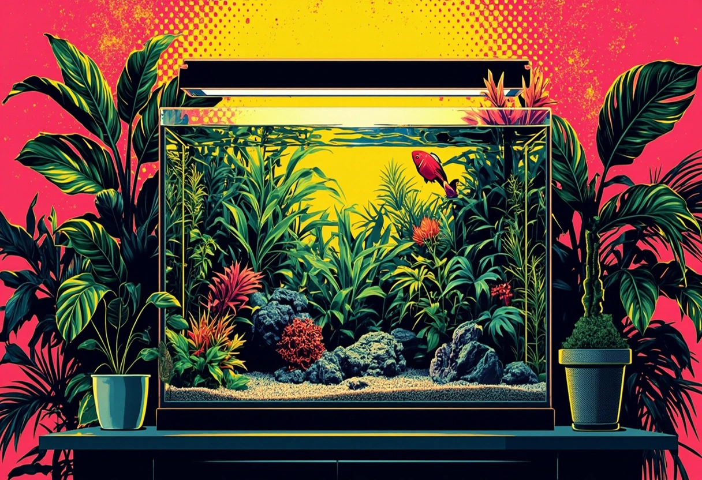

Low-Tech-Aquarium ohne CO₂: Pflanzenbecken einfach, stabil und günstig betreiben

Ein Low-Tech-Aquarium ist die perfekte Wahl für alle, die ein üppiges Pflanzenbecken betreiben möchten, ohne in teure CO₂-Druckgas-Anlagen, High-End-Beleuchtung und aufwendige Düngesysteme investieren zu müssen. Der Begriff "Low-Tech" steht dabei nicht für minderwertige Technik, sondern für einen bewusst schlanken Ansatz: weniger Technik, weniger Chemie, weniger Aufwand – aber dennoch ein stabiles und optisch ansprechendes Aquarium.
In diesem Guide erfährst du, wie ein Low-Tech-Aquarium funktioniert, welche Pflanzen sich besonders gut eignen, wie du Licht und Düngung richtig dosierst und warum dieses Konzept gerade für Einsteiger und entspannte Aquascaper so attraktiv ist.
1. Low-Tech richtig verstehen
Ein Low-Tech-Aquarium verzichtet bewusst auf eine aktive CO₂-Düngung per Druckgas-Anlage. Stattdessen wird das benötigte Kohlendioxid allein durch natürliche Prozesse bereitgestellt: Fische atmen CO₂ aus, Bakterien produzieren es beim Abbau organischer Stoffe, und die Oberflächenbewegung sorgt für einen begrenzten Gasaustausch mit der Raumluft.
Der entscheidende Kniff beim Low-Tech-Ansatz ist die Anpassung der Lichtmenge an das verfügbare CO₂. Weniger Licht bedeutet weniger Pflanzenwachstum – aber auch weniger CO₂-Bedarf. Während High-Tech-Aquarien mit starkem Licht und CO₂-Druckgas arbeiten, um maximales Wachstum zu erzielen, lebt das Low-Tech-Becken von einem ausgeglichenen Gleichgewicht zwischen Licht, Nährstoffen und CO₂.
Merke: Im Low-Tech-Aquarium ist die Lichtmenge die entscheidende Stellschraube. Wer zu viel Licht bei zu wenig CO₂ gibt, bekommt unweigerlich Algen – das klassische Ungleichgewicht.
2. Licht als Stellschraube
Im Low-Tech-Aquarium gilt die goldene Regel: Weniger Licht ist mehr. Während High-Tech-Becken oft mit 40–60 Lumen pro Liter arbeiten, reichen im Low-Tech-Bereich 15–25 Lumen pro Liter völlig aus. Die Beleuchtungsdauer sollte 6–8 Stunden nicht überschreiten – eine Zeitschaltuhr ist hier dein bester Freund.
Geeignete Beleuchtung für Low-Tech:
- Einfache LED-Leisten – Günstig und ausreichend für schattenliebende Pflanzen
- Niedrige bis mittlere Lichtstärke – Verhindert Algen und CO₂-Mangel
- Dimmbare Leuchten – Erlauben eine individuelle Anpassung
- Beleuchtungspause (Siesta) – 4 Stunden an, 2–4 Stunden Pause, 4 Stunden an – reduziert Algenrisiko
Eine LED-Leiste wie die Nicrew ClassicLED oder die JBL SOLAR eignet sich hervorragend für den Low-Tech-Betrieb. Achte auf eine Farbtemperatur um 6.500–7.000 Kelvin für natürliches Pflanzenwachstum.
🛒 LED-Beleuchtung für Low-Tech
Eine gute LED-Leiste ist die Basis für dein Low-Tech-Aquarium. Achte auf dimmbare Modelle mit ausreichendem Spektrum.
👉 LED-Leisten bei Amazon entdecken3. Robuste Pflanzen für Low-Tech
Nicht alle Aquarienpflanzen gedeihen ohne CO₂-Düngung. Die folgenden Arten sind erprobt und wachsen auch bei wenig Licht und ohne zusätzliches CO₂ zuverlässig:
Aufsitzerpflanzen (Epiphyten)
- Anubias barteri – Die wohl anspruchsloseste Aquarienpflanze. Langsamwüchsig, robust, ideal für Anfänger.
- Javafarn (Microsorum pteropus) – Braucht wenig Licht, wächst auf Stein und Holz.
- Bucephalandra – Kompakte Aufsitzerpflanze mit schönen Blattstrukturen.
- Javamoos (Taxiphyllum barbieri) – Perfekt für Strukturen, schnellwüchsig und pflegeleicht.
- Weihnachtsmoos (Vesicularia montagnei) – Dichte Polster für Hardscape.
Bodenwurzelnde Pflanzen
- Cryptocorynen (z. B. Cryptocoryne wendtii) – Robust, anpassungsfähig, bildet schöne Horste.
- Vallisnerien (Vallisneria spiralis) – Hintergrundpflanze, vermehrt sich über Ausläufer.
- Wasserpest (Egeria densa) – Sehr schnellwüchsig, hervorragend für die Algenvorbeugung.
- Hornkraut (Ceratophyllum demersum) – Schwimmpflanze, nimmt überschüssige Nährstoffe auf.
- Zwergspeerblatt (Sagittaria subulata) – Bildet einen schönen Vordergrundrasen.
4. Bodengrund und Nährstoffe
Ein guter Bodengrund ist im Low-Tech-Aquarium besonders wichtig, da die Pflanzen weniger über die Wassersäule versorgt werden können. Zwei Wege führen zum Ziel:
Option 1: Nährstoffreicher Soil – Spezialsubstrate wie ADA Amazonia oder Tropica Aquarium Soil geben über Monate Nährstoffe ab, puffern den pH-Wert und fördern das Pflanzenwachstum von Anfang an. Ideal für Low-Tech, da keine zusätzliche Düngung nötig ist.
Option 2: Kies oder Sand + Wurzeltabs – Wer mit normalem Kies arbeitet, sollte Wurzeltabs unter die Pflanzen setzen. Diese versorgen die Wurzeln über Monate mit Eisen, Kalium und Spurenelementen.
Eine dünne Schicht Nährboden unter dem Kies (z. B. von JBL oder Dennerle) ist ebenfalls eine bewährte Methode, um das Pflanzenwachstum nachhaltig zu unterstützen.
5. Düngung ohne Übertreibung
Im Low-Tech-Aquarium wird sparsam gedüngt. Wichtigster Grundsatz: Lieber zu wenig als zu viel. Überschüssige Nährstoffe landen sonst als Algenfutter im Becken.
Bewährte Düngepraxis:
- Eisen (Fe) – 1–2 Mal pro Woche, verhindert helle Blätter und fördert sattes Grün.
- Kalium (K) – Bei vielen Pflanzen und weichem Wasser wichtig.
- NPK-Dünger – Nur bei Bedarf, gemessen mit Wassertests.
- Kein CO₂ – Das ist ja der Sinn des Low-Tech-Konzepts.
Ein Flüssigdünger wie Aqua Rebell Makro Basic oder JBL ProScape NPK reicht für die meisten Low-Tech-Becken völlig aus. Dosiere nach Herstellerangabe, aber reduziere die Menge um 30–50 %.
🛒 Low-Tech Düngemittel
Eisen- und Volldünger, die speziell für langsam wachsende Pflanzenbecken entwickelt wurden.
👉 Dünger bei Amazon ansehen6. Algen vermeiden im Low-Tech
Algen sind der häufigste Grund, warum Low-Tech-Einsteiger aufgeben. Dabei sind sie mit den richtigen Maßnahmen gut kontrollierbar:
- Fadenalgen – Treten bei zu viel Licht oder Nährstoffungleichgewicht auf. Beleuchtungsdauer reduzieren, schnell wachsende Pflanzen fördern.
- Kieselalgen (braune Algen) – Normal in der Einfahrphase, verschwinden von selbst. Geduld hilft.
- Punktalgen – Zeigen auf der Scheibe oft ein Ungleichgewicht bei CO₂ oder Nährstoffen. Regelmäßiger Wasserwechsel hilft.
- Bartalgen – Rotalgen, oft bei Nährstoffmangel oder unregelmäßiger Pflege. Manuell entfernen und Wasserwechsel erhöhen.
Praxistipp: Garnelen und Schnecken sind im Low-Tech-Aquarium unverzichtbare Helfer gegen Algen. Eine Gruppe von 10–20 Zwerggarnelen hält den Algenbewuchs auf natürliche Weise in Grenzen.
7. Besatz und Pflege
Ein Low-Tech-Aquarium ist ein Pflanzenbecken – der Fischbesatz steht bewusst im Hintergrund. Zu viele Fische bedeuten zu viele Nährstoffe und belasten das empfindliche Gleichgewicht. Empfohlen werden:
- Zwerggarnelen (Neocaridina davidi) – Farbenfroh, aktiv, unverzichtbar für die Algenkontrolle
- Microfische – Zwergbärblinge (Boraras brigittae) oder Corydoras pygmaeus, nur 6–8 Stück
- Schnecken – Posthorn- oder Turmdeckelschnecken als Reinigungstrupp
Der Wasserwechsel ist im Low-Tech weniger häufig nötig: 20–30 % alle 2 Wochen reichen völlig aus. Der Filter sollte nur grob gereinigt werden, um die Bakterienkultur nicht zu zerstören.
8. Beispiel-Setups für Low-Tech
Einsteiger-Setup: 30-Liter Nano Cube
- Becken: 30 × 30 × 30 cm
- Bodengrund: Tropica Soil 3L
- Pflanzen: Javafarn auf Wurzel, Anubias nana, Cryptocoryne wendtii, Javamoos
- Technik: Innenfilter (z. B. Eheim PickUp), Nicrew LED, Zeitschaltuhr (8 Stunden)
- Besatz: 10 Red Fire Garnelen, 6 Zwergbärblinge
Fortgeschritten: 60-Liter Scape
- Becken: 60 × 30 × 30 cm
- Bodengrund: Dennerle Nährboden + feiner Kies
- Pflanzen: Bucephalandra auf Stein, Vallisnerien als Hintergrund, Cryptocoryne als Mittelgrund
- Technik: Außenfilter (Eheim Classic 250), JBL SOLAR LED, Zeitschaltuhr
- Besatz: 15 Blue Dream Garnelen, 6 Pygmy Corydoras, Turmdeckelschnecken
9. FAQ – Häufige Fragen zum Low-Tech-Aquarium
Kann ich ein Low-Tech in ein High-Tech umwandeln?
Ja, das ist problemlos möglich. Du erhöhst Licht und CO₂ schrittweise und passt die Düngung an. Die Pflanzen passen sich meist gut an, aber Algen können in der Übergangsphase auftreten.
Sind Wassertests nötig?
Auch im Low-Tech solltest du regelmäßig pH, Nitrit und Nitrat testen – gerade in der Einfahrphase. Sobald das Becken läuft, reicht ein monatlicher Check.
Warum wachsen meine Pflanzen so langsam?
Das ist völlig normal für Low-Tech. Langsames Wachstum bedeutet weniger Schnittarbeit und weniger Nährstoffbedarf. Solange die Pflanzen gesund aussehen und keine Mangelerscheinungen zeigen, ist alles in Ordnung.
Welche Beleuchtungsdauer ist optimal?
6–8 Stunden am Stück oder mit einer Siesta-Pause (4h an – 2h Pause – 4h an). Die Pause hilft, den CO₂-Spiegel wieder aufzubauen und reduziert das Algenrisiko.
Brauche ich einen Außenfilter?
Für Low-Tech-Becken unter 60 Litern reicht ein guter Innenfilter völlig aus. Bei größeren Becken ab 60 L ist ein Außenfilter zu empfehlen, da er mehr Filtervolumen und bessere Strömung bietet.
🛒 Alles fürs Low-Tech-Aquarium
Die wichtigsten Komponenten für dein Pflanzenbecken – Filter, Licht, Bodengrund und Zubehör.
👉 Low-Tech Zubehör bei Amazon shoppenFazit
Ein Low-Tech-Aquarium ohne CO₂ ist kein Kompromiss, sondern eine bewusste Entscheidung für Nachhaltigkeit, Stabilität und geringeren Pflegeaufwand. Mit der richtigen Pflanzenwahl, zurückhaltender Beleuchtung und einem guten Bodengrund entsteht ein Becken, das ohne viel Technik auskommt und dennoch üppig und harmonisch wirkt. Gerade für Einsteiger, Berufstätige oder minimalistische Aquascaper ist das Low-Tech-Konzept die ideale Wahl.
Wichtig ist: Gib dem Becken Zeit. Low-Tech-Aquarien brauchen etwas länger, um einzulaufen und sich zu stabilisieren – aber dafür sind sie dann umso wartungsärmer und verzeihen auch mal einen Urlaub oder eine vernachlässigte Düngung.
Hast du noch Fragen zum Low-Tech-Aquarium? Wir helfen dir gerne weiter – schreib uns einfach eine Nachricht!